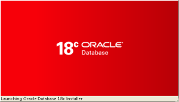

This is the big new feature of Oracle 18c about database software installation. Something that was needed for decades for the ease of software deployment. Piet de Visser raised this to Oracle a long time ago, and we were talking about that recently when discussing this new excitement to deploy software in Docker containers. Docker containers are by definition immutable images. You need a Read Only Oracle Home, all the immutable files (configuration, logs, database) being in an external volume. Then, to upgrade the software, you just open this volume with an image of the new database version.
In 12.2 you may have seen a ‘roohctl’ script in ORACLE_HOME/bin. The help explains that ‘rooh’ stands for Read-Only Oracle Home:
[oracle@VM122 ~]$ roohctl -help
Usage: roohctl [] [ ]
Following are the possible flags:
-help
Following are the possible commands:
-enable Enable Read-only Oracle Home
-disable Disable Read-only Oracle Home
Note that in 18c the help does not show ‘-disable’ even if it is accepted….
So in 12cR2 you were able to run ‘roohctl -enable’ but the only thing it did was changing the Yes/No flag in orabasetab:
cat $ORACLE_HOME/install/orabasetab #orabasetab file is used to track Oracle Home associated with Oracle Base /u01/app/oracle/product/12.2.0/dbhome_1:/u01/app/oracle:OraDB12Home1:Y:
Here is an Oracle 18 that I re-installed (as an Oracle Home Clone) with the following:
runInstaller -clone ORACLE_HOME=/u01/app/oracle/product/181 ORACLE_HOME_NAME=O181 ORACLE_BASE=/u00/app/oracle
My idea is to be able to easily differentiate the different paths (ORACLE_HOME under /u01 and ORACLE_BASE under /u00)
The $ORACLE_HOME/install/orabasetab records the ORACLE_HOME, ORACLE_BASE and ORACLE_HOME_NAME:
[oracle@VM181 18c]$ cat $ORACLE_HOME/install/orabasetab #orabasetab file is used to track Oracle Home associated with Oracle Base /u01/app/oracle/product/181:/u01/app/oracle:O181:N:
ORACLE_HOME: This may seem useless because this file is under ORACLE_HOME, so if you read it you are supposed to know the ORACLE_HOME. However, you may find it from different paths (symbolic links, /../.) and this is a good way to normalize it.
ORACLE_BASE: This will be used to externalize the mutable files outside of the ORACLE_HOME
ORACLE_HOME_NAME: is the name of Oracle Home that you provide when installing and you can find in the Oracle Inventory.
The last field is ‘N’ when the mutable files are under ORACLE_HOME and ‘Y’ when they are externalized to have an immutable Read Only Oracle Home.
We are not supposed to use this file directly. It is modified by runInstaller and roohctl. And it is read by orabasehome and orabaseconfig
We have two new location name derived from the orabasetab content.
One is the ‘Oracle Base Config’ which is mostly there to find the configuration files (.ora, .dat) in the /dbs subdirectory. With Read Only Oracle Home, this is set to the ORACLE_BASE:
[oracle@VM181 18c]$ orabaseconfig /u00/app/oracleMost of the files in /dbs have the ORACLE_SID in their name, which is unique in the host, and this is why they can all go into the same directory. However, I would prefer a subdirectory per database. When you move a database from one system to another, it is easier to move a directory. You can do per-file symbolic links but be sure to maintain them as they may be re-created as files.
The other is the ‘Oracle Base Home’ which is mostly there for the /network subdirectory (with the SQL*Net configuration files, logs and trace) and the /assistant (DBCA templates) and /install ones. With Read Only Oracle Home, this goes to a /homes subdirectory of ORACLE_BASE
[oracle@VM181 18c]$ orabasehome /u00/app/oracle/homes/O181
As you see, there is an additional subdirectory with the name of the Oracle Home. In my opinion, it is not a good idea to put sqlnet.ora, tnsnames.ora and listener.ora here. It is better to have one common TNS_ADMIN. However, because the default was one directory per Oracle Home, the Read Only Oracle Home feature had to keep this possibility. In 12.2 an ORACLE_HOME/env.ora was introduced to set TNS_ADMIN in a consistent way.
With Read Only Oracle Home enabled, I strace-ed a ‘startup’ to show which files are read:
[oracle@VM181 18c]$ ORACLE_SID=CDB18 strace -e trace=file -f sqlplus / as sysdba <<&1 | grep /u00
...
open("/u00/app/oracle/homes/O181/network/admin/oraaccess.xml", O_RDONLY) = -1 ENOENT (No such file or directory)
access("/u00/app/oracle/homes/O181/network/admin/oraaccess.xml", F_OK) = -1 ENOENT (No such file or directory)
open("/u00/app/oracle/homes/O181/network/admin/oraaccess.xml", O_RDONLY) = -1 ENOENT (No such file or directory)
access("/u00/app/oracle/homes/O181/network/admin/sqlnet.ora", F_OK) = -1 ENOENT (No such file or directory)
...
access("/u00/app/oracle/homes/O181/network/admin/sqlnet.ora", F_OK) = -1 ENOENT (No such file or directory)
access("/u00/app/oracle/homes/O181/network/admin/intchg.ora", F_OK) = -1 ENOENT (No such file or directory)
access("/u00/app/oracle/homes/O181/network/admin/tnsnav.ora", F_OK) = -1 ENOENT (No such file or directory)
...
open("/u00/app/oracle/dbs/cm_CDB18.dat", O_RDONLY|O_SYNC) = -1 ENOENT (No such file or directory)
[pid 15339] access("/u00/app/oracle/homes/O181/network/admin/sqlnet.ora", F_OK) = -1 ENOENT (No such file or directory)
...
[pid 15339] stat("/u00/app/oracle/dbs/spfileCDB18.ora", 0x7ffe6a5785b8) = -1 ENOENT (No such file or directory)
[pid 15339] open("/u00/app/oracle/dbs", O_RDONLY) = 8
[pid 15339] stat("/u00/app/oracle/dbs/spfileCDB18.ora", 0x7ffe6a578010) = -1 ENOENT (No such file or directory)
[pid 15339] stat("/u00/app/oracle/homes/O181/dbs/spfile.ora", 0x7ffe6a5785b8) = -1 ENOENT (No such file or directory)
[pid 15339] open("/u00/app/oracle/homes/O181/dbs", O_RDONLY) = 8
[pid 15339] stat("/u00/app/oracle/homes/O181/dbs/spfile.ora", 0x7ffe6a578010) = -1 ENOENT (No such file or directory)
[pid 15339] access("/u00/app/oracle/dbs/initCDB18.ora", F_OK) = -1 ENOENT (No such file or directory)
[pid 15339] open("/u00/app/oracle/dbs/initCDB18.ora", O_RDONLY) = -1 ENOENT (No such file or directory)
LRM-00109: could not open parameter file '/u00/app/oracle/dbs/initCDB18.ora'
The files were not there as I’ve not created any database here. The goal is to show that there is no attempt to read any configuration file under ORACLE_HOME.
You can also see that DBCA will search for templates in this new directory:
I mentioned network and assistant subdirectories. But it concerns all directories where the instance can write files:
[oracle@VM181 18c]$ du $ORACLE_BASE/homes 4 /u01/app/oracle/homes/O181/assistants/dbca/templates 8 /u01/app/oracle/homes/O181/assistants/dbca 12 /u01/app/oracle/homes/O181/assistants 4 /u01/app/oracle/homes/O181/network/trace 4 /u01/app/oracle/homes/O181/network/admin 4 /u01/app/oracle/homes/O181/network/log 16 /u01/app/oracle/homes/O181/network 4 /u01/app/oracle/homes/O181/dbs 4 /u01/app/oracle/homes/O181/install 64 /u01/app/oracle/homes/O181/rdbms/log 72 /u01/app/oracle/homes/O181/rdbms/audit 140 /u01/app/oracle/homes/O181/rdbms 180 /u01/app/oracle/homes/O181 184 /u01/app/oracle/homes
You may wonder why we see a /dbs subdirectory here as the instance configuration files are in the common /u01/app/oracle/dbs. The /dbs is also the current working directory for oracle processes. And this one will be set to ORACLE_BASE/homes/oracle_home_name/dbs.
We can also see /rdbms/log here. I opened a bug 2 years ago about SBTIO.LOG not going to the right place under ADR_HOME, but going to ORACLE_HOME/rdbms/log (Bug 23559013 USER_DUMP_DEST VALUE NOT IGNORED EVEN THOUGH DIAGNOSTIC_DEST IS SET). I’ve no idea about the status of the bug, but at least this will not go to Oracle Home anymore. Even if you don’t really have the need to have a Read Only Oracle Home, this feature is a good way to ensure that it will not grow and fill the filesystem.
You enable this feature with ‘roohctl -enable’ after software installation and before any creation of databases or listeners:
[oracle@VM181 18c]$ roohctl -enable Enabling Read-Only Oracle home. Update orabasetab file to enable Read-Only Oracle home. Orabasetab file has been updated successfully. Create bootstrap directories for Read-Only Oracle home. Bootstrap directories have been created successfully. Bootstrap files have been processed successfully. Read-Only Oracle home has been enabled successfully. Check the log file /u01/app/oracle/cfgtoollogs/roohctl/roohctl-180217PM111551.log.
If the utility tool finds an existing database or listener related to this Oracle Home, it will return this kind of error:
Cannot enable Read-Only Oracle home in a configured Oracle home. The Oracle Home is configured with databases 'CDB18'. The Oracle Home is configured with listeners 'LISTENER'.
There is an undocumented ‘-force’ parameter to add to ‘roohctl -enable’ which can proceed anyway, but it will not move the configuration files.
I have not tested all possibilities because the General Availability of 18c is currently limited to Exadata and Oracle Public Cloud. But it seems that this roohctl will work the same on Windows (with /database instead of /dbs and with registry settings instead of orabasetab) and with Grid Infrastructure (there’s a -nodeList argument).
I mentioned above that the ORACLE_HOME/install goes to $(orabasehome)/install. I don’t know which files go there when ROOH is enabled. The orabasetab remains under ORACLE_HOME, of course. And some logs, such as re-running root.sh, still go to ORACLE_HOME/install:
[oracle@VM181 ~]$ sudo $ORACLE_HOME/root.sh Check /u01/app/oracle/product/181/install/root_VM181_2018-02-18_19-06-23-833474515.log for the output of root script
This looks strange, but remember that the idea of a Read Only Oracle Home is to ship it after all changes are done. If you have something to change (patch, re-link, …) that will go to another Oracle Home. Maybe cloned from the other, then made Read Only after the changes.
Do you use the question mark as a shortcut to ORACLE_HOME? This does not change and remains the ORACLE_HOME:
[oracle@VM181 ~]$ sqlplus / as sysdba SQL*Plus: Release 18.0.0.0.0 Production on Sun Feb 18 20:26:33 2018 Version 18.1.0.0.0 Copyright (c) 1982, 2017, Oracle. All rights reserved. Connected to an idle instance. SQL> start ? SP2-0310: unable to open file "/u01/app/oracle/product/181.sql" SQL> exit Disconnected
This is ok as I mostly use it to read files from the software distribution (such as ?/rdbms/admin/awrrpt)
If you use it in database configuration files, then be careful. Here I have enabled ROOH and defined a pfile mentioning the spfile with the ‘?’ shortcut
[oracle@VM181 ~]$ orabaseconfig /u00/app/oracle [oracle@VM181 ~]$ cat $(orabaseconfig)/dbs/init$ORACLE_SID.ora spfile=?/dbs/xxxx
However, the ‘?’ is resolved to ORACLE_HOME and not Oracle Base Config:
[oracle@VM181 ~]$ strace -f sqlplus / as sysdba <<&1 | grep xxx
[pid 1898] read(10, "spfile=?/dbs/xxx\n", 4096) = 17
[pid 1898] stat("/u01/app/oracle/product/181/dbs/xxx", 0x7ffc5ac1c758) = -1 ENOENT (No such file or directory)
[pid 1898] stat("/u01/app/oracle/product/181/dbs/xxx", 0x7ffc5ac1c1b0) = -1 ENOENT (No such file or directory)
ORA-01565: error in identifying file '?/dbs/xxx'
Having a read-only Oracle Home, or at least be sure that you have no files written into it, is a good idea. Easier to manage space. Easier to deploy by cloning Oracle Home. Good practice to separate big software directory from small configuration files. And to have the current working directory outside of that. Having configuration files at the same place as the software is always a bad idea (and reminds me the .ini files in C:\WIN directory a long time ago). So, even if it is not enabled by default, Read Only Oracle Home is the way to go.
I think the risks are very limited once tested, as it is just changing the directories and any problem can be worked around with symbolic links on directories. However, this may change some habits and scripts. Not finding the right configuration file in a stressful situation may be annoying.
So, don’t wait, and even in 12c, you can change your habits and replace all references to ${ORACLE_HOME}/dbs by $(orabaseconfig)/dbs and other ${ORACLE_HOME} to $(orabasehome). In 12c they will go to the same ORACLE_HOME. And they you will be ready to enable ROOH in 18c.
{kind=link}
{kind=link}